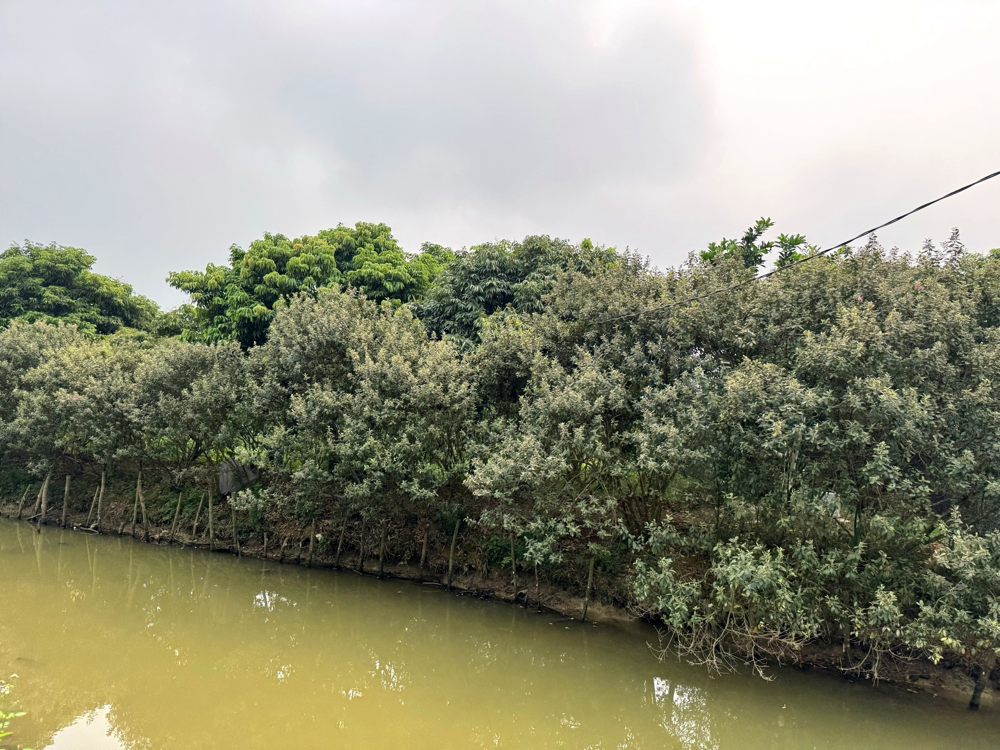
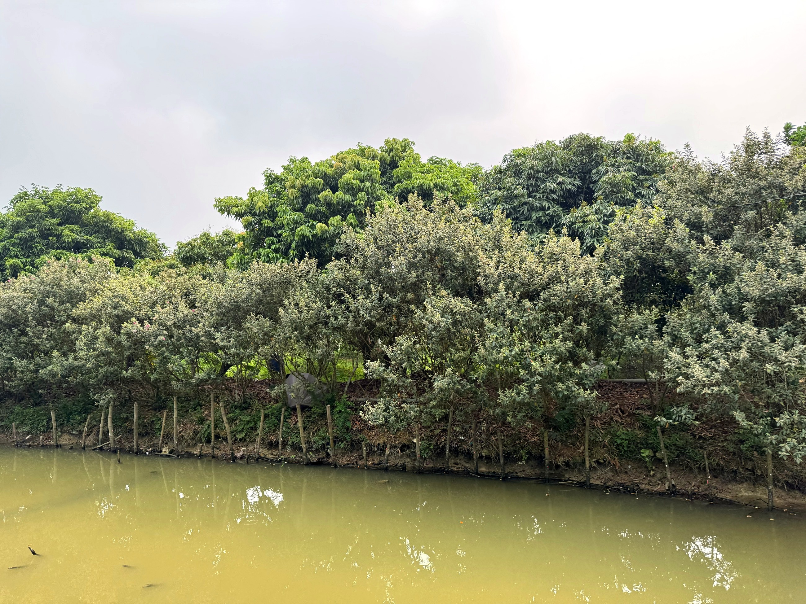

Loại hìnhTypeType
Điểm trải nghiệmExperience spotPoint d'expérience

Vườn Sim Cổ và Rượu Sim là điểm đến độc đáo gắn với đặc sản đồi Mường Cốc – loài sim cổ thụ mọc tự nhiên trên đồi, được ông Nguyễn Mạnh Ngự chăm sóc hoàn toàn bằng tay, không sử dụng hóa chất. Quả sim tím Mường Cốc sau thu hoạch được ủ thành rượu sim theo công thức dân gian truyền thống, đã đạt chứng nhận OCOP của địa phương – một dấu ấn khẳng định chất lượng và bản sắc sản vật vùng đồi Mường.
Đến đây vào mùa sim chín (khoảng tháng 6-8), du khách được trực tiếp hái sim trên đồi, tìm hiểu quá trình từ trồng đến ủ rượu và nghe chủ nhà kể về hành trình đưa rượu sim Mường Cốc đạt OCOP. Rượu sim và quả sim khô cũng là món quà có giá trị mang về từ chuyến du lịch.
The Ancient Rose Myrtle Garden and Rose Myrtle Wine is a unique destination linked to the specialty of Muong Coc hills – ancient rose myrtle trees growing naturally on the hills, meticulously cared for by Mr. Nguyen Manh Ngu entirely by hand, without chemicals. After harvest, the purple Muong Coc rose myrtle fruits are fermented into wine using a traditional folk recipe, having achieved local OCOP certification – a mark affirming the quality and identity of the Muong hill region's produce.
Visit during the ripe sim berry season (around June-August) to pick sim berries directly from the hill, learn about the process from cultivation to wine fermentation, and hear the host's story of how Mường Cốc sim wine achieved OCOP recognition. Sim wine and dried sim berries also make valuable souvenirs from your trip.
Le Vườn Sim Cổ et le Rượu Sim sont une destination unique liée à la spécialité des collines de Mường Cốc – des myrtes anciens poussant naturellement sur les collines, méticuleusement entretenus par M. Nguyễn Mạnh Ngự entièrement à la main, sans produits chimiques. Après la récolte, les fruits violets du myrte de Mường Cốc sont fermentés en vin selon une recette populaire traditionnelle, ayant obtenu la certification OCOP locale – un label affirmant la qualité et l'identité des produits de la région des collines de Mường.
Venez pendant la saison des baies de sim mûres (environ juin-août) pour cueillir directement les baies sur la colline, découvrir le processus de la culture à la fermentation du vin, et écouter l'hôte raconter comment le vin de sim de Mường Cốc a obtenu la reconnaissance OCOP. Le vin de sim et les baies de sim séchées sont également de précieux souvenirs à rapporter de votre voyage.
| Tham quan vườn sim cổExplore the heritage Rose Myrtle garden.Explorez l'ancien jardin de myrte rose. | Tham quan và tìm hiểu về cây sim bản địaTour and learn about the native Sim plant.Visitez et découvrez la plante de Sim indigène. |
| Hái sim theo mùaSeasonal Rose Myrtle PickingCueillette Saisonnière de Myrte Rose | Trải nghiệm thu hoạch quả sim cùng chủ nhà (mùa tháng 6-8)Experience harvesting sim berries with your host (season: June-August).Participez à la récolte des baies de sim avec votre hôte (saison : juin-août). |
| Tìm hiểu quy trình ủ rượu simDiscover the sim wine fermentation processDécouvrez le processus de fermentation du vin de sim | Giới thiệu công đoạn từ quả sim đến rượu thành phẩmDiscover the process from sim fruit to finished wine.Découvrez le processus, du fruit de sim au vin fini. |
| Nếm thử rượu simSim wine tastingDégustation de vin de sim | Thưởng thức rượu sim OCOP tại vườnEnjoy OCOP rose myrtle wine in the gardenDégustez le vin de sim OCOP au jardin |
| Mua rượu sim và sản vậtPurchase sim wine and local produceAchetez du vin de sim et des produits locaux | Rượu sim OCOP, quả sim khô, làm quà tặngOCOP Sim wine and dried Sim fruit, perfect as gifts.Vin de Sim OCOP et fruits de Sim séchés, parfaits comme cadeaux. |


Vườn Sim Cổ và Rượu Sim hướng tới xây dựng thương hiệu rượu sim Mường Cốc trở thành đặc sản du lịch nổi bật của vùng đồi Mỹ Đức, kết hợp trải nghiệm tham quan vườn với giáo dục về nông nghiệp tự nhiên và sản phẩm OCOP. Gia đình mong muốn mở rộng công suất ủ rượu, xây dựng thêm không gian nếm thử và tìm kiếm thêm kênh phân phối sản phẩm qua mạng lưới du lịch cộng đồng. Điểm đến Du lịch cộng đồng Mường Cốc, Xã Mỹ Đức – Thành phố Hà NộiVườn Sim Cổ và Rượu Sim (Ancient Myrtle Garden and Myrtle Wine) aims to establish the Mường Cốc myrtle wine brand as a prominent tourism specialty of the My Duc hill region, combining garden tours with education on natural agriculture and OCOP products. The family wishes to expand wine fermentation capacity, build additional tasting spaces, and seek more product distribution channels through the community tourism network. A Mường Cốc Community Tourism Destination, My Duc Commune – Hanoi City.Vườn Sim Cổ và Rượu Sim (Jardin de Myrte Ancien et Vin de Myrte) vise à établir la marque de vin de myrte Mường Cốc comme une spécialité touristique emblématique de la région vallonnée de My Duc, combinant l'expérience de la visite du jardin avec l'éducation sur l'agriculture naturelle et les produits OCOP. La famille souhaite augmenter la capacité de fermentation du vin, construire des espaces de dégustation supplémentaires et rechercher davantage de canaux de distribution de produits via le réseau de tourisme communautaire. Une destination de tourisme communautaire de Mường Cốc, commune de My Duc – ville de Hanoi.